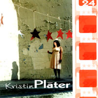

Kristin Plater: 24
The 11 Song cd by Kristin Plater! Featuring Steve Mayone, Jonas Kahn, Steve Moore, John Sands (Aimee Mann), Eric Kilburn, Rob Ignazio, Jim Gambino (Swinging Steaks)and Dana Colley (Morphine). Recorded at Wellspring Sound Studio in Acton, MA and Porter Square Studio in Somerville, MA. Engineered, Mixed and Mastered by Rob Ignazio. Produced by Kristin Plater and Rob Ignazio. Photos by Deb Kelson, Graphic Design by Ken Scribner and Kristin Plater.